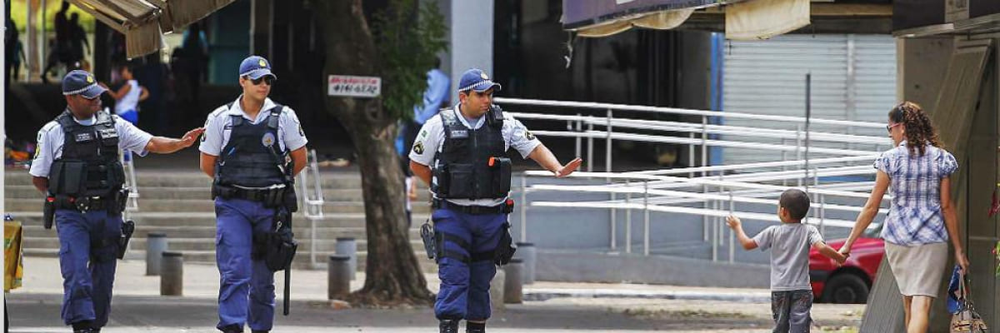

O policiamento comunitário é uma abordagem que busca aproximar a polícia da comunidade, criando uma relação de confiança e colaboração mútua para a prevenção e resolução de crimes. Essa estratégia busca uma maior interação entre a polícia e a população, estimulando a participação ativa dos cidadãos no combate à criminalidade.
https://faculdadesensu.edu.br/policiamento-comunitario-integracao-e-prevencao-como-forma-de-combate-a-criminalidade/Entre as vantagens do policiamento comunitário, podemos citar a melhoria da qualidade de vida das pessoas, a redução dos índices de criminalidade, a sensação de segurança e a construção de uma cultura de paz e cidadania. Para implementar o policiamento comunitário, é preciso investir em capacitação dos policiais, equipamentos de tecnologia e infraestrutura adequada.
 https://direitosfundamentais.org.br/a-seguranca-publica-como-direito-para-todos-e-uma-utopia/Alguns exemplos de iniciativas que promovem o policiamento comunitário incluem a criação de programas de vizinhança solidária, onde os próprios moradores se organizam para vigiar o bairro, a realização de reuniões periódicas entre a polícia e a comunidade para discutir questões de segurança, e a adoção de práticas de mediação de conflitos para evitar que pequenos problemas se transformem em casos de violência. O policiamento comunitário é uma estratégia importante para a construção de uma sociedade mais justa e segura.